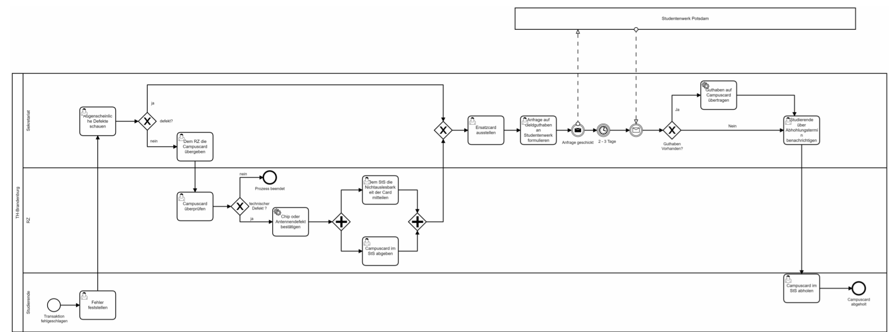

Campuscardsdefekt
Ngo onla fanny, Eric Martial Tindo, Arnold Marius N. Nkouamou, Guerin Fossi , Dieffi T.Arold kevin
- Coffee
- Tea
- Milk
.Prozesszweck: Bearbeitung eine defektcard.
.Kunden und Erwartung:Die Studenten erwarten seine neue Campuscard.
.Outcome: Benachrichtigen der Studierende über der Abholungstermin.
.Auslöser: Studierende Secretariat.
.Erster Prozesschritt: Augenscheinlicher Defekt.
.Letzter Prozessschritt: Abholung der Karte.
.Schnittstellen Ausgangseitig: controlling.
.Schnittstellen Eingangseitig: Transation festgeschalten.
.Lieferanten und unsere Erwartung: vollständige und rechtzeitige information durch die Studenten.
.ErforderlichRessourcen:Rechenzentrum,StudierendenSecretariat,Studentenwerks Potsdam.
.Erfolgsfaktoren: Neue Campuscard erstellen.
Bei einer Transaktion in der Hochschule Mensa stellt der Studierende fest, dass seine Campuscard nicht funktioniert, dann geht er damit zum Studentensekretariat, Einmal dort wird von der Sachbearbeiterin nach augenscheinlichen Defekten (geknickt, gelocht, eingerissen) geschaut. Falls augenscheinlicher Defekt (unsachgemäßer Umgang) wird in der Regel am selben/nächsten Tag eine Ersatzkarte ausgestellt, darüber hinaus überprüft das Studentensekretariat, ob es Geldguthaben in der alten defekten Campuscard gibt. Dies wird beim Studentenwerk Potsdam per E-Mail angefragt und ihnen nach Rückmeldung (2-3 Tage) Falls kein augenscheinlicher Defekt wird der Studierende zum Rechenzentrum geschickt mit der Bitte um Überprüfung der Campuscard, das Rechenzentrum überprüft noch mal die Campuscard mit einem bestimmten Gerät und bestätigt einen Chip oder Antennendefekt durch "Nichtmehrauslesbarkeit der Karte", teilt dem Studentensekretariat diese Meldung mit, dann geht der Studierende wieder zum Studentensekretariat, gibt die defekte Campuscard ab und lässt sich eine neue Campuscard ausstellen. Das Studentensekretariat übertragt das Geldguthaben je nach der Antwort des Studentenwerks Potsdam nach Erhalt ihrer Rückmeldung auf die neue Campuscard. Der Studierende wird über einen Abholungstermin benachrichtigt und kann seine neue Campuscard im Studentensekretariat abholen, anschließend endet der Prozess mit der Abholung der neuen Campuscard.

This is a paragraph.
| // Berechnung Steuerschuld double rohesteuerschuld = bemessungsgrundlage * ((mindsteuersatz + grenzsteuersatz) / 2.0) String steuerschuld = String.valueOf((long) Math.ceil(rohesteuerschuld)) execution.setVariable("steuerschuld", steuerschuld) | // Berechnung Grenzsteuersatz long bemessungsgrundlage = Math.max(0, einkommen - freibetrag); double vegrenze = (double) einkommensgrenze - freibetrag; double progressionsfaktor = Math.min(1.0, bemessungsgrundlage / einkommensgrenze) double grenzsteuersatz = mindsteuersatz + progressionsfaktor * |
|---|---|
| Hallo | paul |